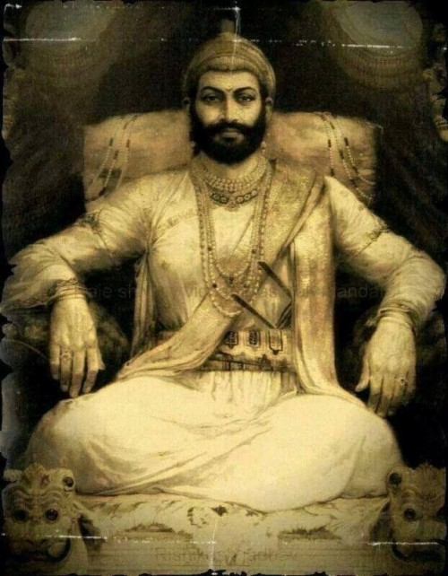

Chhatrapati Shivaji Maharaj
The man who saved a billion lives

Here's a timeline of Chhatrapati Shivaji Maharaj:
- 1627 - Shivaji Maharaj born in the hill fort of Shivner.
- 1643-47 - Shivaji Maharaj overran the hill forts of Kondana, Torana and Raigarh.
- 1647 - Shivaji Maharaj Guardian Dadaji Khondev died.
- 1656 - Shivaji Maharaj conquered Javli from Chandra Rao More
- 1657 - Shivaji Maharaj came into conflict with the Moghuls for the first time by making raids into Ahmednagar.
- 1659 - Afzal Khan of Bijapur was killed by Shivaji Maharaj.
- 1660 - Moghul Governor Shaista Khan occupied Pune
- 1663 - Shivaji Maharaj made an attack on Shaistakhan's harem and wounded him.
- 1664 - Shivaji Maharaj raided and looted Surat.
- 1665 - Jai Singh besieged the fort of Purandar and forced Shivaji to sign the treaty of Purandar.
- 1666 - Shivaji Maharaj escaped from Agra.
- 1670 - Shivaji Maharaj attacked Surat for the second time.
- 1674 - Shivaji Maharaj crowned himself at Raighad and assumed the title of Maharaja Chhatrapati.
- 1676 - Shivaji Maharaj last campaign against Jijapuri Karnataka. Captured Jinji and Vellore.
- 1680 - Shivaji Maharaj died.
-- Chhatrapati Shivaji Maharaj